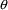
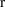
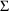
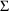
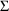
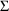

vector.
vector.Chapter 9 - Additional NM-TRAN Records
This chapter tells how to give initial estimates to NONMEM’s parameters ($THETA, $OMEGA, $SIGMA records); how to tell NONMEM what tasks to perform ($ESTIMATION, $COVARIANCE records); and how to tell NONMEM what additional output to produce ($TABLE, $SCATTERPLOT records).
This record provides an
initial estimate (and, optionally, provides lower and upper
bounds) for every element of NONMEM’s
vector.
The $THETA record
contains a list of values, separated by spaces or commas,
which are the initial estimates for the
 ’s used in the $PK and $ERROR statements. The position
of a value in the list corresponds to its position
(subscript) in the
’s used in the $PK and $ERROR statements. The position
of a value in the list corresponds to its position
(subscript) in the
 vector. For example, consider the following statement:
vector. For example, consider the following statement:
$THETA 1.7 .102 29.
This says that the initial estimate for
 is 1.7, the initial estimate for
is 1.7, the initial estimate for
 is .102, and the initial estimate for
is .102, and the initial estimate for
 is 29. Some users of NONMEM prefer to code each value on a
separate line so that they can include comments to
themselves describing the significance of the
is 29. Some users of NONMEM prefer to code each value on a
separate line so that they can include comments to
themselves describing the significance of the
 ’s. The above record could have been coded as follows:
’s. The above record could have been coded as follows:
$THETA 1.7 ; RATE CONSTANT OF ABSORPTION
.102 ; RATE CONSTANT OF ELIMINATION
19. ; VOLUME OF DISTRIBUTION
This is a matter of style.
When NONMEM is told to
estimate the parameters (Section 4.1, the Estimation Step,
below), it varies the elements of
to find values which cause the model to fit the observations
best. The values on the $THETA record are the initial
estimates of
 for this search. When only an initial estimate is provided,
NONMEM is free to chose any positive or negative value for
that element of
for this search. When only an initial estimate is provided,
NONMEM is free to chose any positive or negative value for
that element of
 . We then say that the
. We then say that the
 element is unconstrained, which means that its lower
bound (lower limit) is
and its upper bound (upper limit) is
. When finite bounds are desired, the initial estimate and
its bounds must be enclosed in parentheses and specified in
the order (lower, initial, upper). When the upper bound
needn’t be finite, the initial estimate and its lower
bound are enclosed in parentheses and specified in the order
(lower, initial). Note that when no estimation is performed,
upper and lower bounds have no effect.
element is unconstrained, which means that its lower
bound (lower limit) is
and its upper bound (upper limit) is
. When finite bounds are desired, the initial estimate and
its bounds must be enclosed in parentheses and specified in
the order (lower, initial, upper). When the upper bound
needn’t be finite, the initial estimate and its lower
bound are enclosed in parentheses and specified in the order
(lower, initial). Note that when no estimation is performed,
upper and lower bounds have no effect.
In the theophylline
example of Chapter 2, for example, negative
 values are physiologically impossible. Each
values are physiologically impossible. Each
 element was given a lower bound of 0, which constrained it
to be non-negative:
element was given a lower bound of 0, which constrained it
to be non-negative:
$THETA (0, 1.7) (0, .102) (0,
29.)
It is possible to mix
constrained and unconstrained
 s; this was done in Chapter 2, figure 2.12:
s; this was done in Chapter 2, figure 2.12:
$THETA (0,.0027) (0,.70) .0018
.5
An upper bound of
may be stated explicitly using the value 1000000 or
the word INFINITY. Similarly, a lower bound of
 may be stated explicitly as -1000000 or
-INFINITY.
may be stated explicitly as -1000000 or
-INFINITY.
When estimation is
performed, it is sometimes desirable to hold one or more
elements of
 to a constant value. One example is when a full model is
reduced to a simpler model, as discussed in Chapter 5,
Section 2.1; usually this is done by holding some
to a constant value. One example is when a full model is
reduced to a simpler model, as discussed in Chapter 5,
Section 2.1; usually this is done by holding some
 element to 0. In fact, the value 0 may not be used as an
initial estimate for an element of
element to 0. In fact, the value 0 may not be used as an
initial estimate for an element of
 unless this element is fixed to this value. A
unless this element is fixed to this value. A
 element is held constant by inserting the word FIXED
after the initial estimate. For example, the
following statement allows
element is held constant by inserting the word FIXED
after the initial estimate. For example, the
following statement allows
 and
and
 to vary, but holds
to vary, but holds
 to the value .102:
to the value .102:
$THETA 1.7 .102 FIXED 29.
Parentheses may be used to make the statement easier to
read:
$THETA 1.7 (.102 FIXED) 29.
If the lower, initial, and upper values for an element of

are identical, the element of
 is understood to be fixed, even if the word FIXED does not
appear.
is understood to be fixed, even if the word FIXED does not
appear.
When estimating
parameters, good initial estimates for
 are sometimes important. Poor initial estimates may
occasionally cause the NONMEM run to take excessive amounts
of computer time, to produce parameter estimates that are
not physiologically reasonable, or to fail to produce any
parameter estimates at all. For some drugs and models,
initial estimates for
are sometimes important. Poor initial estimates may
occasionally cause the NONMEM run to take excessive amounts
of computer time, to produce parameter estimates that are
not physiologically reasonable, or to fail to produce any
parameter estimates at all. For some drugs and models,
initial estimates for
 can be obtained from published literature describing prior
studies with the drug. For some studies, very accurate
values may have been obtained by prior runs with NONMEM or
other regression programs. Highly accurate values should be
perturbed (modified) by about 10% before being used as
initial estimates in a NONMEM run. (Initial estimates that
are too close to what may be the actual final estimates will
cause problems in a NONMEM run; see Chapter 13.) Sometimes,
however, there is little guidance in choosing initial
estimates for some elements of
can be obtained from published literature describing prior
studies with the drug. For some studies, very accurate
values may have been obtained by prior runs with NONMEM or
other regression programs. Highly accurate values should be
perturbed (modified) by about 10% before being used as
initial estimates in a NONMEM run. (Initial estimates that
are too close to what may be the actual final estimates will
cause problems in a NONMEM run; see Chapter 13.) Sometimes,
however, there is little guidance in choosing initial
estimates for some elements of
 .
.
One approach with
population data, where there is a reasonable amount of data
for each individual, is as follows. It is often easier to
guess at appropriate parameter values for individual data
than for population data. So, first estimate each
individual’s parameter values using only the data from
the individual. The mean values of the individuals’
parameter estimates can then be used as the initial
parameter estimates in the population analysis. Results from
individual runs can also be used to obtain initial estimates
for elements of
 and
and
 ; see below.
; see below.
Another approach is simply to let NONMEM find an initial estimate. NONMEM has an automatic strategy for so doing; see Chapter 12, Section 4.4.
Recall that
 and
and
 are variance/covariance matrices for the following random
variables:
are variance/covariance matrices for the following random
variables:
|
Individual Model
|
|
|
Population Model
|
In all the examples in
this document,
 and
and
 are diagonal matrices, in which covariance elements
such as
(which is
) are assumed to be zero. NONMEM also allows full
variance/covariance matrices; this is beyond the scope of
this text, but see Chapter 12, Section 4.1.
are diagonal matrices, in which covariance elements
such as
(which is
) are assumed to be zero. NONMEM also allows full
variance/covariance matrices; this is beyond the scope of
this text, but see Chapter 12, Section 4.1.
Initial estimates for the
variances must be provided to NONMEM via the $OMEGA and
$SIGMA records. Initial estimates of all model
parameters (
 ,
,
 , and
, and
 ) must be provided even if estimation is not requested.
$OMEGA and $SIGMA records each contain a list of values,
separated by spaces or commas, which are the estimates for
the corresponding variances. As in the $THETA record, the
position of a value in the list corresponds to the position
(subscript) of the corresponding variance (along the
diagonal) in the matrix.
) must be provided even if estimation is not requested.
$OMEGA and $SIGMA records each contain a list of values,
separated by spaces or commas, which are the estimates for
the corresponding variances. As in the $THETA record, the
position of a value in the list corresponds to the position
(subscript) of the corresponding variance (along the
diagonal) in the matrix.
With individual data,
 variables are used in $ERROR records, where they are called
either ERR or ETA. For example, in the theophylline problem
of Chapter 2 (figure 2.1) there appear the records:
variables are used in $ERROR records, where they are called
either ERR or ETA. For example, in the theophylline problem
of Chapter 2 (figure 2.1) there appear the records:
$ERROR
Y=F+ERR(1)
$OMEGA 1.2
Here, ERR(1) corresponds to
, and the initial estimate for its variance is 1.2: i.e.,
.
With population data,
 variables are used in $PK statements. For example, in the
phenobarbital problem of Chapter 2 (figure 2.6) there appear
the lines:
variables are used in $PK statements. For example, in the
phenobarbital problem of Chapter 2 (figure 2.6) there appear
the lines:
CL=TVCL+ETA(1)
V=TVVD+ETA(2)
$OMEGA .0000055, .04
The $OMEGA record says that the initial estimate for the
variance of
 is
, and of
is
, and of
 is .04: i.e.,
and
. Some users of NONMEM prefer to code each value on a
separate line so that they can include comments:
is .04: i.e.,
and
. Some users of NONMEM prefer to code each value on a
separate line so that they can include comments:
$OMEGA .0000005 ; VARIANCE IN CL
.04 ; VARIANCE IN V
This record is used only
with population data, and is similar to the $OMEGA record.
It gives the initial estimates of the variances of the
 variables used in the $ERROR statements, where they are
called either ERR or EPS. For example, in Figure 2.6, there
also appears the records:
variables used in the $ERROR statements, where they are
called either ERR or EPS. For example, in Figure 2.6, there
also appears the records:
$ERROR
Y=F+ERR(1)
$SIGMA 25
Here, ERR(1) corresponds to
, and the initial estimate for its variance is 25: i.e.,
.
It is sometimes desirable
to hold one or more elements of
 or
or
 to constant value(s). In the population example of Chapter 2
it is possible to ignore interindividual variability in CL
by fixing
to constant value(s). In the population example of Chapter 2
it is possible to ignore interindividual variability in CL
by fixing
 to 0†.
to 0†.
----------
† One could
also re-write the $PK statements to eliminate ETA(1) in the
model for CL, which also requires that ETA(2) in the model
for V be re-numbered as ETA(1). It is easier to modify only
$OMEGA.
----------
The variance of an
 or
or
 variable is held constant by inserting the word FIXED
after the initial estimate:
variable is held constant by inserting the word FIXED
after the initial estimate:
$OMEGA 0 FIXED .0225
Parentheses may be used to make the statement easier to
read:
$OMEGA (0 FIXED) .0225
As with
 , the value 0 may not be used as an initial estimate for any
element of
, the value 0 may not be used as an initial estimate for any
element of
 or
or
 unless the element is fixed to this value.
unless the element is fixed to this value.
The initial estimates for
the variances will depend on the particular (interindividual
and/or intraindividual) error models chosen. The estimates
do not have to be particularly accurate, although values
which are much too small can cause difficulties for NONMEM.
In general, it is better to over-estimate the variances
rather than to under-estimate them. As with initial
estimates for
 , initial estimates can sometimes be obtained from published
literature or from prior runs with NONMEM or other
regression programs.
, initial estimates can sometimes be obtained from published
literature or from prior runs with NONMEM or other
regression programs.
Initial estimates can
also be obtained by an approach which we illustrate with
examples for both intraindividual and interindividual error
models. The standard deviation of a physiological quantity
is generally some fraction

of its typical value
 :
.
:
.
|
For the additive model: |
Some ambiguity exists
about what we mean by "the typical value" of y.
For the purpose of obtaining an initial estimate of the
variance, we need not be too particular about this. For the
theophylline example (Figure 2.1), we may choose the mean of
the observed values as the typical value. This value is
approximately 5.4. Assuming 20% error, i.e.
, then
. Similarly, in the first phenobarbital example (Figure
2.6), the mean of the observations is approximately 25.
Again assuming 20% error, then
 , and
. For that same example, the typical value of CL was
estimated according to the model for the parameter:
TVCL=THETA(1). We used the initial estimate of
, and
. For that same example, the typical value of CL was
estimated according to the model for the parameter:
TVCL=THETA(1). We used the initial estimate of
 , .0047, as the typical value of CL, and assumed 50% error:
. The model for V is TVVD=THETA(2). Again, we used
the initial estimate of
, .0047, as the typical value of CL, and assumed 50% error:
. The model for V is TVVD=THETA(2). Again, we used
the initial estimate of
 , .99, as the typical value of V, but assumed 20% error:
. Note finally that in the second phenobarbital example
(Figure 2.12), we used as initial estimates of variance the
final estimates obtained from the first example
(understanding that these estimates could be somewhat large
due to some of the variability being explained in this
example by a systematic influence of weight).
, .99, as the typical value of V, but assumed 20% error:
. Note finally that in the second phenobarbital example
(Figure 2.12), we used as initial estimates of variance the
final estimates obtained from the first example
(understanding that these estimates could be somewhat large
due to some of the variability being explained in this
example by a systematic influence of weight).
|
For the constant coefficient of variation model: |
If we identify t with the value of f (whatever it may be), we have:
In other words, using the CCV model, we do not need to estimate the typical value of the variable. For example, assuming 20% error, .
As with
 , it is possible for NONMEM itself to obtain initial
estimates of
, it is possible for NONMEM itself to obtain initial
estimates of
 and
and
 automatically; see Chapter 12, Section 4.4.
automatically; see Chapter 12, Section 4.4.
Two main tasks of NONMEM, the Estimation Step and the Covariance Step, are optional and must be specifically requested by including the $ESTIMATION and $COVARIANCE records. To skip the Estimation Step, simply omit the $ESTIMATION record. To skip the Covariance Step, simply omit the $COVARIANCE record.
In every run NONMEM computes and prints the value of the objective function and the final parameter estimates. The values printed are based on the final parameter estimates if the Estimation Step is requested, and are based on the initial estimates if it is not.
In the Estimation Step,
NONMEM performs a search to obtain those values of
 ,
,
 , and (for population studies)

which give the lowest value of the objective function. The
output of this step is the pages whose titles are "
MONITORING OF SEARCH: ", "
MINIMUM VALUE OF OBJECTIVE FUNCTION ",
and " FINAL PARAMETER ESTIMATE ".
This step is requested by the presence of the following
statement:
, and (for population studies)

which give the lowest value of the objective function. The
output of this step is the pages whose titles are "
MONITORING OF SEARCH: ", "
MINIMUM VALUE OF OBJECTIVE FUNCTION ",
and " FINAL PARAMETER ESTIMATE ".
This step is requested by the presence of the following
statement:
$ESTIMATION
There are several options, which are described in the NONMEM
Users Guide, Part IV. The most frequently used ones are as
follows.
|
METHOD=0 |
NONMEM always sets etas to 0 during the computation of the objective function. Also called the "first order (FO) method." This is the default. It may also be coded as METHOD=ZERO .
|
METHOD=1 |
NONMEM uses conditional estimates for the etas during the computation of the objective function. METHOD=1 is also called the "first order conditional estimation (FOCE) method." It may also be coded as METHOD=CONDITIONAL . When the option INTERACTION is also present, the method is called the "FOCE with INTERACTION method". It is recommended for continuous variables unless the data are very sparse. These methods are discussed in Guide VII, Conditional Estimation Methods.
|
SIGDIGITS=n |
By default, the search
continues until the estimates of all elements of
 ,
,
 , and

have been determined to at least 3 significant figures.
Because only 3 significant digits are used to print
parameter estimates in the output, and for other reasons as
well, this amount of accuracy is often sufficient. However,
the SIGDIGITS option can be used to request a different
number (n) of significant digits.
, and

have been determined to at least 3 significant figures.
Because only 3 significant digits are used to print
parameter estimates in the output, and for other reasons as
well, this amount of accuracy is often sufficient. However,
the SIGDIGITS option can be used to request a different
number (n) of significant digits.
|
MAXEVAL=n |
The Estimation Step always runs with a specific limit on the number of objective function evaluations allowed during the search, as a protection against infinite loops and excessively long runs. The default maximum is computed according to the number of parameters being estimated. The MAXEVALS option can be used to request a different number (n) for the maximum number of function evaluations.
|
PRINT=n |
As the Estimation Step
progresses, by default it prints intermediate output
summarizing the progress of the search. The search proceeds
in stages, called iterations. At the end of certain
iterations a summarization is printed which consists of the
values of the objective function, its gradient vector with
respect to the parameters, and the parameter values
themselves. By default, this summarization is only printed
for the first and last iterations. The PRINT option can be
used to request a number (n) such that starting from the
first iteration, only n-1 iterations are skipped before
another summarization is printed†.
----------
†
The PRINT option can also be used to suppress intermediate
printout altogether, but this should usually not be done
because the information is often of value. See Chapter 10,
Section 4.
----------
An example of the use of
these options is:
$EST SIG=6,MAX=900,PRI=5
In addition to the first and last iterations, summarizations
are printed every 5th iteration. Notice that abbreviations
of the record and option names were used; this is a matter
of style.
In the Covariance Step,
NONMEM obtains information on the precision of the parameter
estimates obtained in the Estimation Step. The output of
this step are pages with titles " STANDARD ERROR
OF ESTIMATE ", " COVARIANCE MATRIX
OF ESTIMATE ", " CORRELATION MATRIX
OF ESTIMATE ", and " INVERSE
COVARIANCE MATRIX OF ESTIMATE ". This step is
requested by the presence of the following record:
$COVARIANCE
There are several options, which are discussed in NONMEM
Users Guide, Part IV. The Covariance Step cannot be
requested by itself; the Estimation Step must precede
it‡.
----------
‡ The
Estimation Step may be omitted when the run is continued
from a prior run using a Model Specification input file; see
Chapter 12, Section 4.3, and Chapter 13, Section 3.2.
----------
$TABLE and $SCATTERPLOT records are used to request NONMEM steps which generate additional output. If one of these records is omitted, NONMEM does not produce the corresponding additional output. Tables and scatterplots are generated after all other tasks have been performed. This affects the values displayed for PRED, RES, and WRES. If the Estimation Step is not run, then the initial estimates of the parameters are used to compute these quantities. If the Estimation Step is run, then the final parameter estimates are used. Residuals (RES) and weighted residuals (WRES) are defined in Chapter 11, Section 4.4.2.
The UNCONDITIONAL option of the $TABLE and $SCATTERPLOT records requests that output of this type be generated even if the Estimation Step terminates unsuccessfully, and is the default. The CONDITIONAL option of these records requests that output of this type be generated only if the Estimation Step terminates successfully.
The values of DV, PRED,
RES, and WRES are always printed in every table. Other data
items to be printed should be listed on the record. The data
items are printed in the order in which they are listed.
This does not have to be the same order as in the data file,
nor does every data item have to be listed. For example, the
following record appears in Chapter 2, figure 2.12:
$TABLE ID TIME AMT WT APGR
Figure 10.10 in Chapter 10 shows a portion of the resulting
output.
It is possible for the lines of a table to be sorted into a different order than that of the original input file; this is discussed in the NONMEM Users Guide, Part IV.
More than one table can be printed. A separate $TABLE record is used to request each one.
Chapter 2 contained many
examples of $SCATTERPLOT records and the resulting output.
Here, for example, are the records from figure 2.6:
$SCATTERPLOT PRED VS DV UNIT
$SCATTERPLOT RES VS WT
The word UNIT requests a unit-slope line, which is the line
PRED=DV. Figures 2.10 and 2.11 show the resulting
output.
Similarly, the word ORD0 can be used to request a zero line on the ordinate axis.
It is possible to
generate several scatterplots with a single record, by using
a list of data item names:
$SCATTERPLOT (PRED,RES,WRES) VS WT
This produces three scatterplots, and has the same effect as
the three records:
$SCATTERPLOT PRED VS WT
$SCATTERPLOT RES VS WT
$SCATTERPLOT WRES VS WT
Sometimes it is desirable
to partition a scatterplot into a number of separate
scatterplots. For example, if the data contain both plasma
and urine observations, it would be better to separate the
scatterplot of PRED vs. DV into one scatterplot where the DV
values are the plasma observations, and another one where
the DV values are the urine observations. To do this, it is
necessary to specify a partitioning data item, in this case,
the CMT data item, which gives the compartment number of the
observation. The following record could be used.
$SCATTERPLOT PRED VS DV BY CMT UNIT
This will produce separate scatterplots: one with plasma
observations (CMT=1 if ADVAN1 is used), and one with urine
observations (CMT=2 if ADVAN1 is used).
Two partitioning items
can also be specified:
$SCATTERPLOT PRED VS DV BY CMT SEX UNIT
One scatterplot is produced for each unique
combination of values of the two partitioning data
items.
Two main rules control the placement and order of records within a NM-TRAN control file:
The $INPUT record must appear before any records which contain data item names ($PK, $ERROR, $TABLE, $SCATTERPLOT)
The $SUBROUTINE, $PK, and $ERROR records should appear in the indicated order, but do not have to be consecutive.
The records $DATA, $THETA, $OMEGA, $SIGMA, $ESTIMATION, $COVARIANCE, $TABLE, and $SCATTERPLOT can be placed anywhere among the control records, in any order. However, NONMEM always performs its tasks in a fixed order:
Estimation Step
Covariance Step
Table Step
Scatterplot Step
Thus, even if the $TABLE record precedes the $ESTIMATION record, the values of PRED, RES, and WRES in the table will be based on the final parameter estimates.
One or more records of the form
INCLUDE filename n
may appear anywhere among the NM-TRAN control records. The characters INCLUDE may be upper- or lower-case. "n" is an optional integer, and gives the number of copies (default is 1).
NM-TRAN opens the named file and reads it to end-of-file. The contents of the named file may be any portion of an NM-TRAN control stream, e.g., NM-TRAN control records and/or abbreviated code. After reaching end-of-file, if the number of copies is greater than 1, NM-TRAN rewinds the file and re-reads it the specified number of times. After reaching end-of-file on the final (or only) copy, NM-TRAN resumes reading the original control stream after the include record.
There may be more than one INCLUDE record, but they may not be nested. That is, an included file may not contain INCLUDE records.
For example,
$PROBLEM
Model "a" with data set 27, proportional error
INCLUDE data27.def
INCLUDE modela.def
$ERROR Y=F+F*ERR(1)
$THETA 1.3 4
$OMEGA .04
$SIGMA 1
$ESTIMATION
The file data27.def
contains the $INPUT and $DATA records.
The file modela.def contains the $SUBROUTINE record and $PK
block.
 (OMEGA) for
(OMEGA) for
 (Random Intraindividual Variability)
(Random Intraindividual Variability) (OMEGA) for
(OMEGA) for
 (Random Interindividual Variability)
(Random Interindividual Variability)
 (SIGMA) for
(SIGMA) for
 (Random Intraindividual Variability)
(Random Intraindividual Variability)